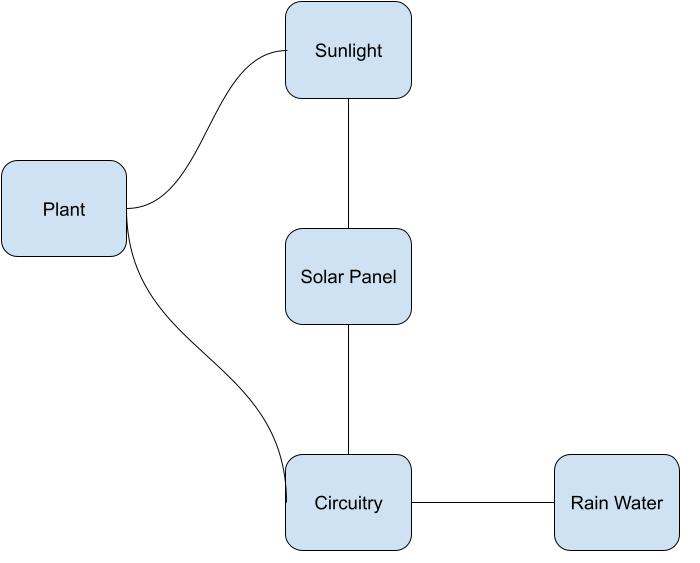
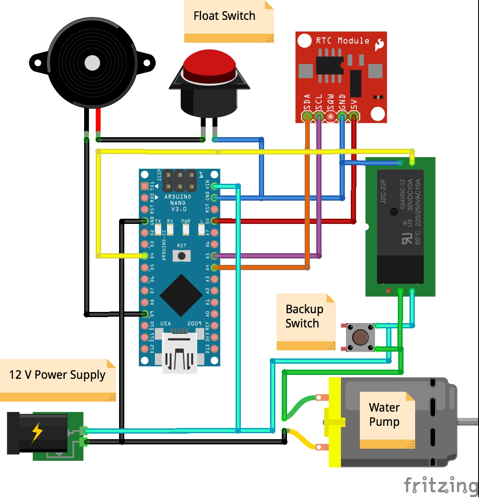

.jpg)
cad1

cad2
We knew we didn't want to use a hydration sensor because we want the product to last and the hydration sensors tend to wear away. That's why we went for a clock based farm. We also wanted to minimise the amount of input from the owner so we made the project solar powered.
// Herbal garden watering project //
/*
The following part of the code is from https://create.arduino.cc/projecthub/robotgeek-projects-team/
using-a-real-time-clock-with-arduino-6b3896
and from http://www.instructables.com/id/How-to-use-a-Buzzer-Arduino-Tutorial/
*/
#include
#include "DS1307.h"
DS1307 clock;//define a object of DS1307 class
const int RELAY = 4; //Relay set to digital pin 4
const int buzzer = 9; //Buzzer set to digital pin 9
void setup()
{
pinMode(RELAY, OUTPUT);
clock.begin();
pinMode(buzzer, OUTPUT); // Set buzzer - pin 9 as an output
}
void loop()
{
timedRelay();
tone(buzzer, 2000); // Send 2KHz sound signal...
delay(500); // ...for half sec
noTone(buzzer); // Stop sound...
delay(500); // ...for half sec
}
void timedRelay()
{
clock.getTime();
switch (clock.hour)
{
case 6: //when the clock reads 6 AM seconds (Once every 24 hours)
digitalWrite(RELAY, HIGH); // turn the Relay on (HIGH is the voltage level)
delay(20000); // wait for 20 second
digitalWrite(RELAY, LOW); // turn the Relay off by making the voltage LOW
delay(3600000); // wait for 3600 second
}
switch (clock.hour)
{
case 20: //when the clock reads 8 PM seconds (Once every 24 hours)
digitalWrite(RELAY, HIGH); // turn the Relay on (HIGH is the voltage level)
delay(20000); // wait for 20 second
digitalWrite(RELAY, LOW); // turn the Relay off by making the voltage LOW
delay(3600000); // wait for 3600 second
}
}
Our goal is to revolutionise the home gardening industry by making farming more efficient and accessible to the working class who may not be able to water their plants multiple times a day. In the long run we want to help the lower class have easier access to food that is healthy and home grown.
Our first thought was to make a normal garden. Then we realized that it may be a challenge to find a plug so a long cable was the obvious choice. After thinking it though we realized a cable may be clunky and a solar panel would be far more elegant. Then we were thinking about a moisture deteriorating method for when to stop watering but due to the sensors not lasting long we choose a timer based design. We choose a timer over a set amount of water because that would be very complicated. We also wanted to make temperature control but we decided to scrap that idea as it overcomplicated the project and didn't add anything of essence. We decided to go for a solar powered watering system in the end because of its low cost and simplicity for the user. The solar greenhouse is better than its competitors due to its modular design, low cost, and the use of rainwater and sunlight reduces the need for intervention but when needed there is an alarm.